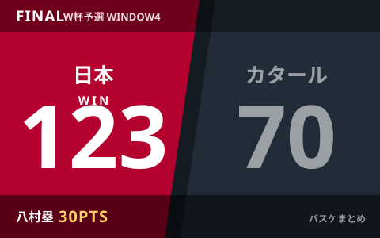
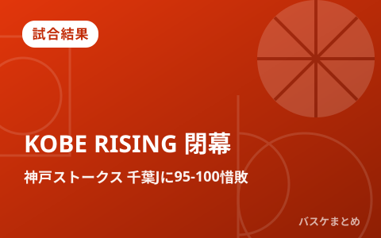
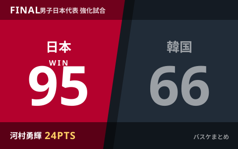
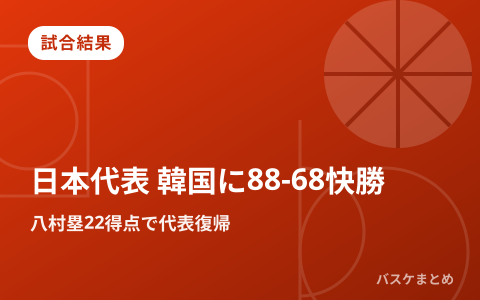
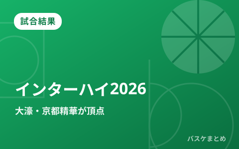
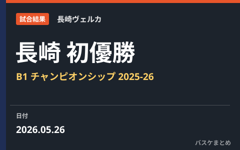

公式・メディアの新着
もっと見る ›配信元の見出しとリンクのみを自動で収集しています。タップすると元記事が開きます。
最新ニュースは1ページ目に載せています。
最終更新:
2026年10月13日 08:20
試合結果

試合結果
男子日本代表、サウジアラビアに86-80で競り勝ち開幕2連勝 カーク23得点10リバウンドで1次リーグ突破、13日は韓国戦

試合結果
男子日本代表、アジア大会初戦インドネシアに98-53で大勝 津屋一球23得点、本日19時はサウジアラビア戦

試合結果
女子日本代表、ハンガリーに63-84で敗れ47年ぶりのベスト8ならず

試合結果
女子日本代表、スペインに59-79で敗れるもA組3位通過 9日未明にハンガリーと8強懸けた一戦

試合結果
女子日本代表、今夜24:50スペイン戦へ グループAは全4チーム1勝1敗の大混戦

試合結果
女子日本代表、開催国ドイツに58-74で完敗 W杯2026は1勝1敗で最終戦スペインへ

試合結果
男子日本代表、カタールに123-70で圧勝 八村塁30得点・河村勇輝9アシストでレバノンと並ぶ6勝目

試合結果
佐賀バルーナーズ、プレシーズンで前季B1王者・長崎ヴェルカに89-85で競り勝つ 新加入ナシール・リトルが躍動

試合結果
男子日本代表、サウジアラビアに106-78で快勝 八村塁29得点・河村勇輝9アシストでW杯予選Window4白星発進

試合結果
「KOBE RISING -2026-」閉幕 神戸ストークスは千葉ジェッツに95-100で惜敗、島根は北海道に1点差で涙

試合結果
河村勇輝24得点で日本代表が韓国に95-66で2連勝、八村塁は欠場｜SoftBank CUP 2026

試合結果
八村塁22得点で衝撃の代表復帰、日本代表が韓国に88-68快勝｜買取大吉カップ2026

試合結果
【インターハイ2026】男子・福岡大濠が9年ぶり、女子・京都精華学園が2年ぶり優勝

試合結果